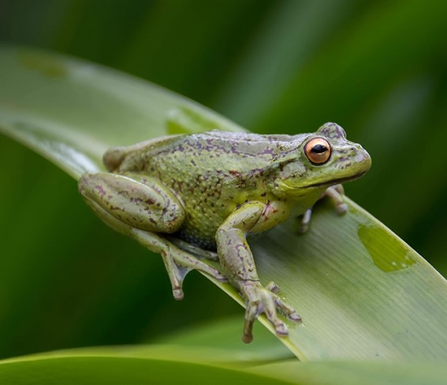
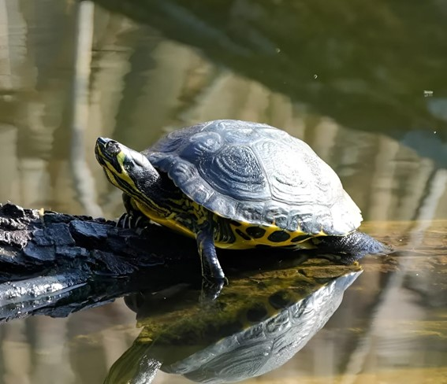
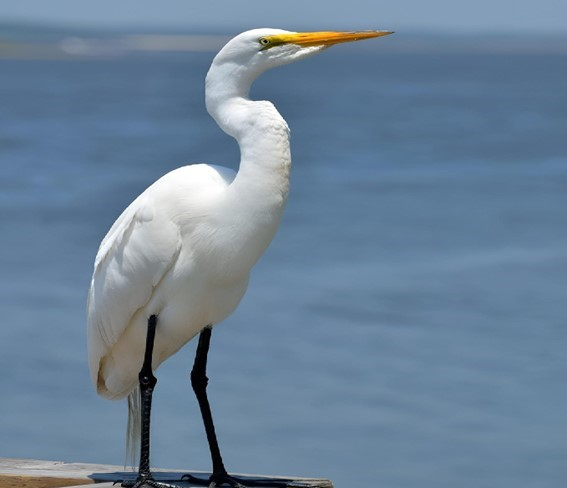
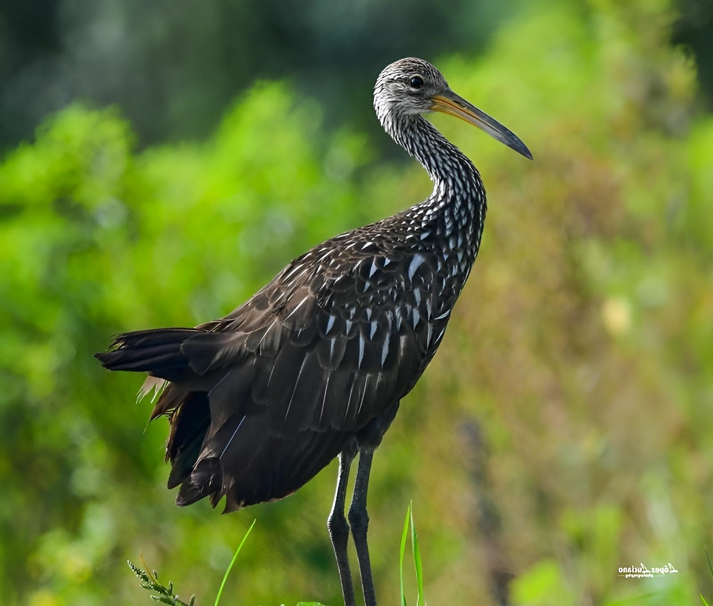
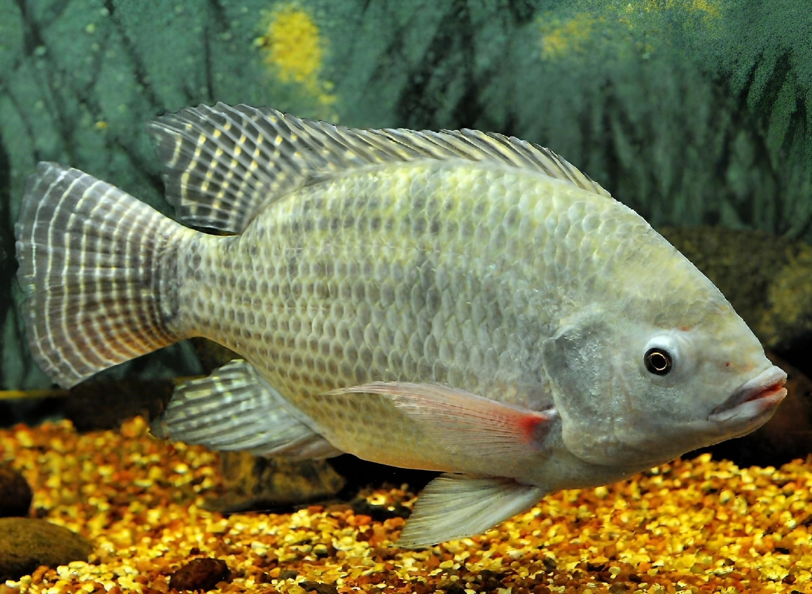
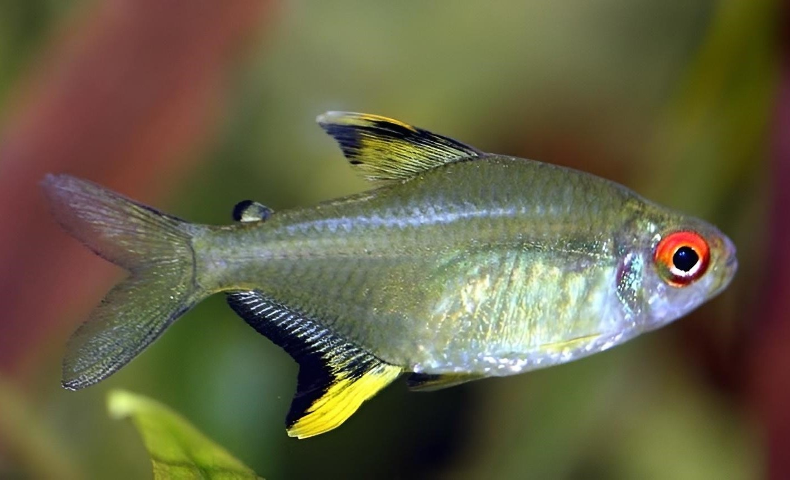
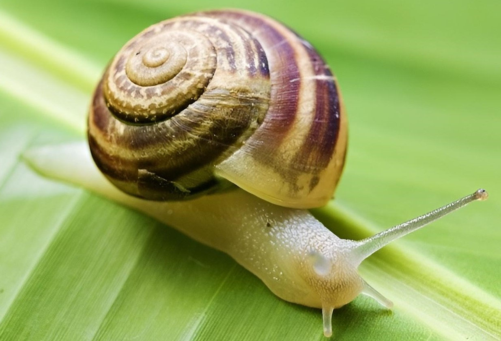

RANAS

Son un tipo de anfibios caracterizados principalmente por su gran capacidad de salto gracias a la morfología de sus extremidades posteriores, potentes y muy desarrolladas. Los ejemplares más pequeños miden aproximadamente 8 cm, mientras que los más grandes pueden alcanzar los 30 cm. Son muy importantes para los ecosistemas porque son consumidores primarios cuando son renacuajos, también comen y son comidos. Son alimento de aves o peces y a su vez, se alimentan de insectos por lo que son controladores de plagas naturales.
PETAS DE AGUA DULCE

La tortuga de agua dulce o peta de río (Podocnemis unifilis) habita en la amazonia boliviana. Esta especie cumple un rol importante en los ecosistemas ayudando a reforestar los bosques inundados mediante la digestión de alimentos; además, son las mejores limpiadoras de los ríos. Cada una puede poner un promedio de 30 huevos, que demoran entre 70 y 80 días en eclosionar en su incubadora natural de arena y agua.
GARZAS

Las garzas son un grupo de aves de gran belleza, adaptadas a medios acuáticos y de alta importancia ecológica para los humedales. Se caracterizan por ser esbeltas, de patas, cuellos y picos largos, cuellos en forma de “S” y picos en forma de lanza. Poseen plumas de talco de textura especial utilizadas para limpiar su cuerpo diariamente.
CARRAO

Se alimenta de fauna acuática pequeña, principalmente caracoles. Anida en vegetación densa, palustre y oculta el nido en bañados; pone aproximadamente seis huevos. Tiene un canto parecido a gritos fuertes. El carrao posee patas largas, cuello grisáceo, y un gran pico amarillento levemente curvo adaptado a su dieta.
PEZ TILAPIA

Es un pez de agua dulce y ambiente tropical cuyas características son ser prolífico y de rápido crecimiento. Destaca por su adaptabilidad a una gran variedad de hábitats hídricos. Son de incubación bucal y sus crías aseguran la proliferación de la especie con una rapidez asombrosa, beneficiando el ciclo trófico del humedal.
PECES TETRA

Los Tetra son peces de agua dulce muy tranquilos que miden un máximo de 5 cm. Proceden de la región amazónica y se han adaptado maravillosamente. Tienen grandes capacidades sociales, prefiriendo vivir en grandes cardúmenes para prosperar sin enfermarse de soledad.
CARACOL

Los caracoles se desplazan sobre un pie musculoso segregando una característica baba protectora y lubricante. Su curiosidad por salir en medio de la lluvia obedece a la humedad requerida por su frágil anatomía, mientras su concha firme proporciona el aislamiento adecuado en tiempos de aridez en el curichi.